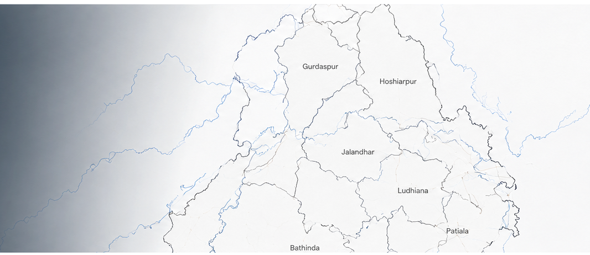

Information corner
Digital public service platform
District Survey Reports
for a transparent Punjab
Access, prepare and monitor District Survey Reports through a unified, secure portal for the Department of Mining and Geology, Government of Punjab.

PunjabLatest Updates
District Survey Report preparation and review services are available through the portal.
View all notices →Citizen & department services
Quick access
Simple & accountable process
How the portal works
- 1Prepare
Authorised officers create the district report.
- 2Review
Data is reviewed through the departmental workflow.
- 3Publish
Approved reports are made available for reference.
Archive →